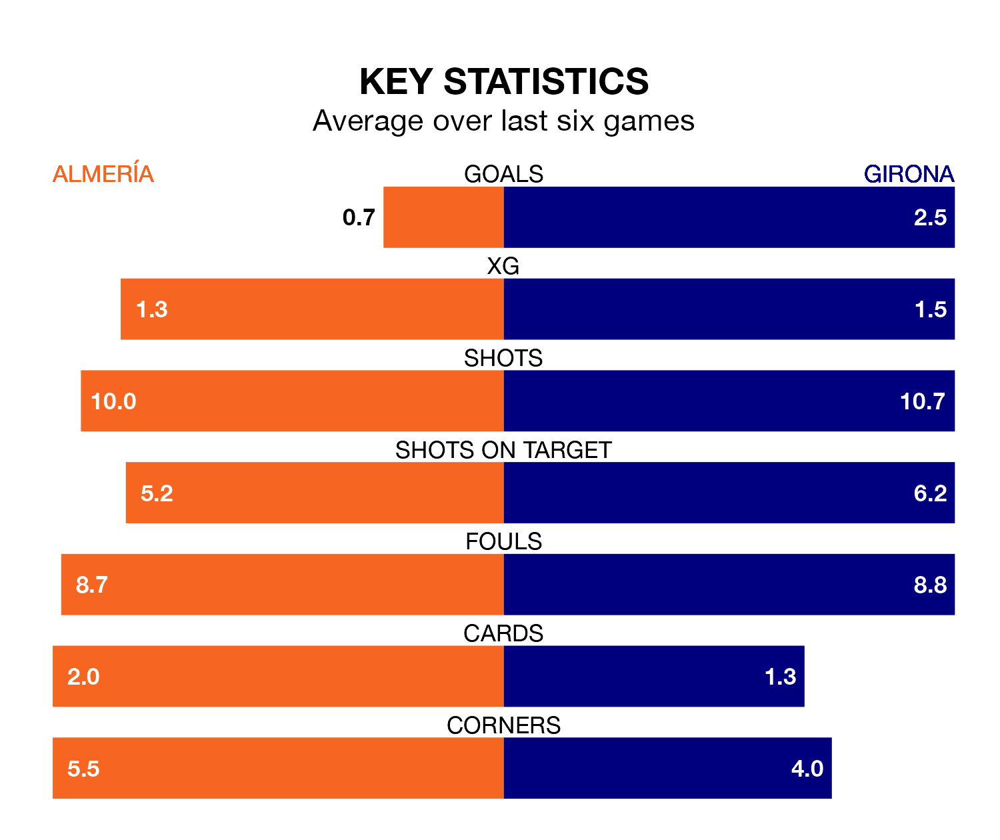

Mid-season relegation candidates Almería face a challenge against high-flying Girona at Power Horse Stadium Estadio de los Juegos Mediterráneos on Sunday.
Almería are rooted to the bottom of the La Liga table, and have picked up no wins and five draws in their 19 games to date.
Girona, meanwhile, are second in the standings with 48 points, having won 15 and drawn three, and are level on points with table-toppers Real Madrid.
With 46 goals in 19 games so far this season, Girona are the league's highest scorers with 2.4 goals per game. And they are conceding at an average rate, letting in 24 goals at a rate of 1.3 per game.
Almería, meanwhile, are below average scorers, with 1.0 goal per game, compared to a league average of 1.3. They have conceded 2.3 goals per game.
The hosts are in terrible form in La Liga, with no wins and two draws from their last six games.
With four wins and two draws over that period, the away team's form is much better – they have taken 14 points from 18, compared to Almería's two.
In the last 10 years, Almería and Girona have played each other on 17 occasions. Almería won five of them, Girona seven, and they drew five times.
On average, Almería scored 1.1 goals and Girona 1.6 in those matches.
Their last meeting was on October 22, when Girona won 5-2 at home.
In Artem Dovbyk, Girona have one of the league's most on-form strikers so far this season. He has notched 11 goals in 18 appearances, to sit fourth in the scoring charts.
His goal rate of one every 101 minutes is much quicker than that of Sergio Arribas, Almería's top scorer with a goal every 250 minutes, and a total of five goals in 19 games.
Almería's last match was on January 4, a 1-0 loss against CA Osasuna.
Girona beat Atlético Madrid 4-3 last time out, on January 3, with Daley Blind, Iván Martín, Sávio and Valery Fernández on the scoresheet.
Updated: 11:31, 09/01/24